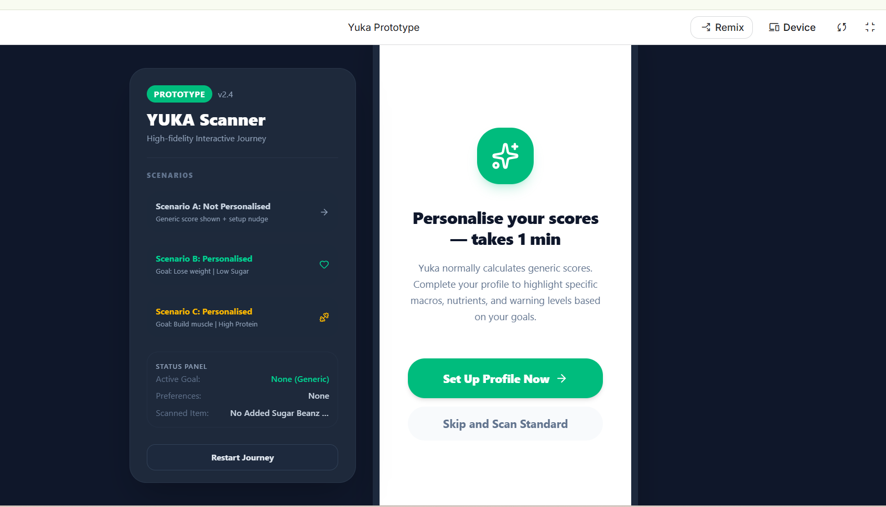
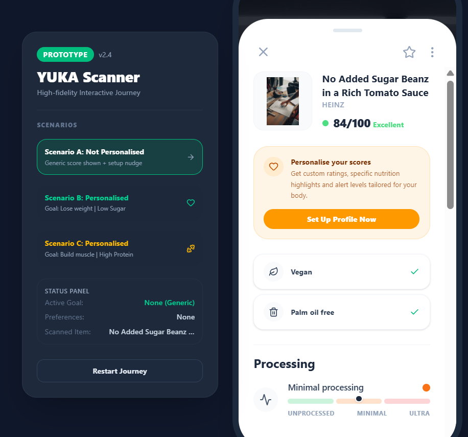
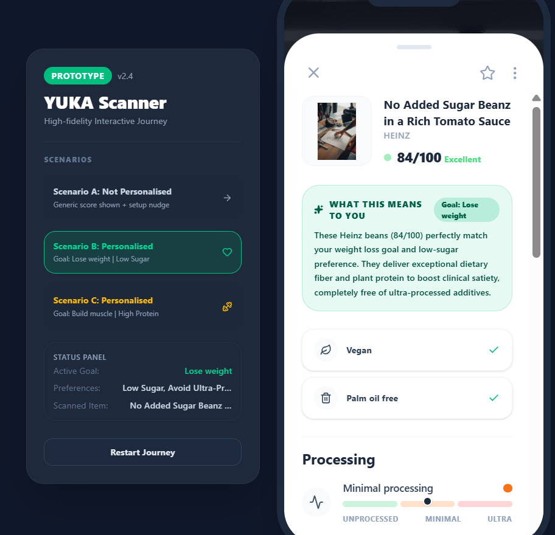
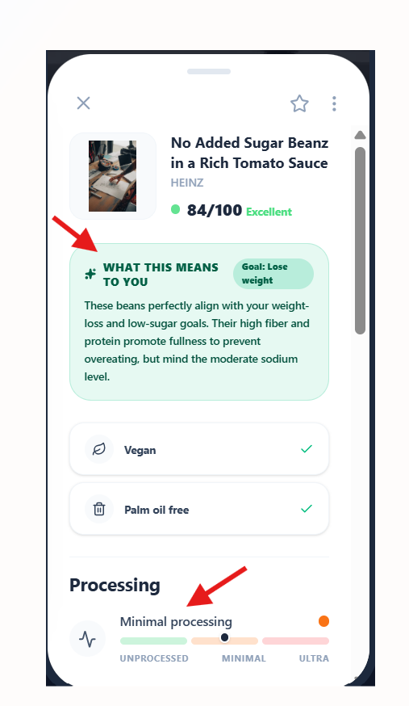
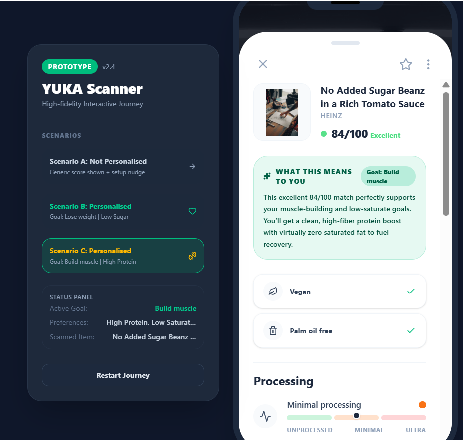

Yuka: Closing the Trust Gap in Health Scores
Independent product analysis · Interactive prototype in Google AI Studio
Overview
Yuka is a mobile app that scans a food or cosmetic product and returns a health score based on nutritional quality, additives, and other factors. This was an independent, three-phase product analysis of the live app: a structured teardown of the current experience, primary user research to find the problem that mattered most, and a prioritised solution taken through to an interactive prototype.
The Problem
Health-conscious users had stopped trusting the score. Products they knew were fine for them, like a toasted seed snack that is naturally high in fat, came back "poor"; ultra-processed cereals came back "excellent". The score is generic by design: it doesn't account for how processed a food is, a person's goals, or portion size, so people either did their own research and ignored it or drifted away. In practice they had narrowed the app down to an additive checker, which meant no reason to upgrade and a slow leak in retention.
"I don't understand why some healthy products are scored so low just because it has a bit of salt."
Approach
I worked through it in three phases.
- Phase 1: Teardown. Mapped every flow in the app end to end (onboarding, scan and score, recommendations, and the return visit), tagging each step as a smooth or friction moment. Ran a competitive scan against Open Food Facts, Think Dirty, Nutrasafe, and the NHS Eatwell Guide, split the user base into five segments, and consolidated the findings into one problem list, each item carrying a confidence level and source.
- Phase 2: Research. Ran 5 user interviews, a 54-response survey, and a synthesis of 150+ reviews from Reddit, Trustpilot, and the App Store. Built two personas, Susan and Conor, and tested the Phase 1 hypotheses against the evidence, confirming some and dropping others (weekly insights and rewards, for instance, turned out not to matter). Scored the surviving problems on persona impact, frequency, and severity to land on a single P0.
- Phase 3: Solution. Brainstormed six solutions against the root causes: oversimplified scoring, disregarding individual needs, and missing detail on factors like food processing. RICE-scored them and took the top three forward: show the food-processing level on the product detail pane, add an AI explanation of why a product scored the way it did, and let users set a goal so the score is read in that context. Built an interactive prototype in Google AI Studio covering all three, then defined the success metrics and a pitfalls-and-mitigations table around them.
Prioritisation
| Solution | RICE | Decision |
|---|---|---|
| Indicate food-processing level on the detail pane | 13.5 | Built into the prototype |
| AI clarification of why a product scored as it did | 9 | Built into the prototype |
| Goal-based personalisation beyond diet preferences | 9 | Prototyped as opt-in scenarios |
| Pull health metrics from connected devices | Moonshot | Deferred, niche and integration-heavy |
| Rework the core scoring algorithm | Moonshot | Deferred, changes a core capability |
| Ingredient-hazard dashboard | 6 | Deferred, low impact and overwhelm risk |
Prototype
The prototype shows the same product, a tomato-sauce bean tin scoring 84/100, read three ways: with no profile set, against a weight-loss goal, and against a muscle-building goal. Each personalised view adds a plain-language "what this means to you" panel and a food-processing indicator.





Key Artefacts
- Flow analysis tagging every step of the app as a smooth or friction moment
- Competitive analysis: Open Food Facts, Think Dirty, Nutrasafe, NHS Eatwell Guide
- Segmentation across five user groups and a consolidated, confidence-rated problem list
- Research pack: 5 interviews, a 54-response survey, 150+ synthesised reviews, and two personas
- P0 problem statement with a priority / impact / frequency scoring model
- Solution brainstorm and RICE prioritisation
- PRD with high-level user stories, success metrics, and a risks-and-mitigations table
- Interactive prototype built in Google AI Studio
Outcome / Impact
Turned an open-ended "analyse this app" brief into one prioritised bet backed by primary research: make scoring transparent and contextual rather than trying to rebuild the scoring algorithm. The prototype demonstrates the direction end to end, and success is framed around quarterly retention of free-tier users, with engagement and app-store sentiment as guardrails so a confusing rollout would show up early.
What I Learned
The research changed my mind. Going in, I assumed the gap was re-engagement features like weekly insights; the interviews and survey said people already came back often enough, and the real damage was to trust in the core score. It also pushed me toward the lower-risk option: the moonshot was to rebuild the scoring algorithm, but transparency plus an AI explanation addressed most of the frustration for a fraction of the effort and risk. Writing the pitfalls table was a useful check in itself, the biggest risk turned out to be simply that users never scroll far enough to see the new information.